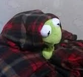

Behold kermit
I love this frog. From Wikipedia: "Kermit the Frog is a Muppet character and Jim Henson's best-known creation. Introduced in 1955, Kermit serves as the straight man protagonist of numerous Muppet productions, most notably Sesame Street and The Muppet Show, as well as in other television series, films, specials, and public service announcements through the years. Henson performed Kermit until his death in 1990. Kermit performed the hit singles "Bein' Green" in 1970 and "The Rainbow Connection" in 1979 for The Muppet Movie, the first feature-length film featuring the Muppets. "The Rainbow Connection" reached No. 25 on the Billboard Hot 100. Kermit's iconic look and voice have been recognizable worldwide since, and in 2006, the character was credited as the author of Before You Leap: A Frog's Eye View of Life's Greatest Lessons, an "autobiography" told from the perspective of the character himself."
Kermit "The" Frog cinematic universe
| Year | Movie or Show | Role | Did I see it | ratings |
|---|---|---|---|---|
| 1969-2009 | Sesame Street | Self | Yes! | 8.1 |
| 1992 | Muppet Christmas Carol | Bob Cratchit | Yes | 7.7 |